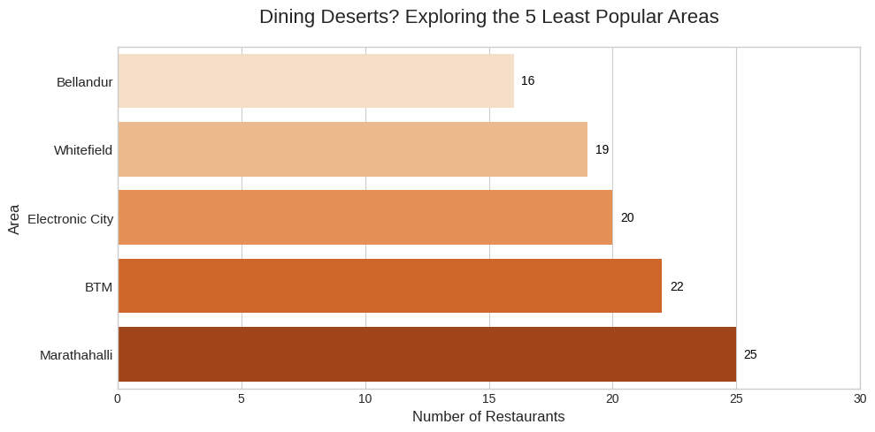

Have you ever walk past a shop and thought to yourself, "How is this shop even making money? Who are their customers?". These are the questions that arise in my mind when i look at cafes or restaurants in zomato. For some reason, I always thought foreign cuisines except something like Chinese or Korean, are not popular in India (especially Bengaluru). And, I am wrong.
I used zomato's data to get some insights about Bengaluru's Food Culture.
Acknowledgement: I know zomato doesn't represent whole Bengaluru and I know
most people doesn't even use zomato (including me) in Benglauru.
But, This is the only data we have now and I just wanna see how Bengaluru's
Zomato Foodies order.
Which restaurant is most popular among Zomato Bengalurians?
Yeah, so, the answer is Asia Kitchen. That's it. The Blog's over.
Buuuuuut, Wait, Have you noticed something? The one who got 4.9 rating with 2200 votes and the one who got 4.9 rating with 16000 votes are at the same level. This is a unfair to Byg Brewski. To overcome this, we use IMDB's weighted average formula for calculating a reasonable rating.
Thanks to this comment on reddit which was over 12 years old for explaining it clearly. Basically, Weighted Average formula values items that have a higher average rating and a higher number of votes more than those with just a high average rating. With this, we get:
CTR is still at 10th place. :(
Areas with Most and Least rated restaurants?
This is a no brainer. Places like Koramangala or Indiranagar has more number of zomato users and dominate this plot. Being an IT area, obviously, they will have a upper hand. I agree and the results also show the same.
For this, I divided the data into two parts:
Most Popular Areas - All the restaurants above 4 Avg. rating
Least Popular Areas - All the restaurants below 3 Avg. rating
Here are the results:
Don't ask me why but IT areas like BTM and Marathalli also have some restaurants with very low ratings. The fact that only one restaurant had rating below 2 fascinates me. Are there no bad restaurants in Bengaluru??
Most Enjoyed Cuisines by Zomato Bengalurians?
What do you think?
a. Chinese
b. Korean
c. North Indian
d. South Indian
The most popular cuisine is Cantonese which comes under Chinese. So, you are right if you picked Chinese. Let's play again? Which cuisine is the second most popular among Zomato Bengalurians?
a. Mediterranean
b. Korean
c. North Indian
d. South Indian
Well......
What the hell is Tex-Mex?? Is there even a cuisine named Tex-Mex? And, even if there is why is it trending in Bengaluru without me knowing about it? Just Why? I checked about it and it is nothing but the mix of Mexican and Texas food. So, the burgers and burritos comes under this category. Why can't they just call it "North American". It would have been better.
The following cuisines can be easily guessed like Mediterranean and Sushi which are popular in Bengaluru. Surprisingly, African is popular too! Never heard of a trending African restaurant. Also, I don't even understand why the hell Japanese and Sushi are two different cuisines?
Curious me, tried to look at where does Indian cuisine comes in. North Indian comes at 4.08 and South Indian at 4.04. And, there is a new cuisine called Modern Indian which is making foreign dishes in Indian style which is interesting.
Conclusion
As i have already told, this data doesn't represent whole Bengaluru. It just represents Zomato Bengalurians. But, this was a fun exploration. I learned some new words to show how "Tex-Mex" i am.